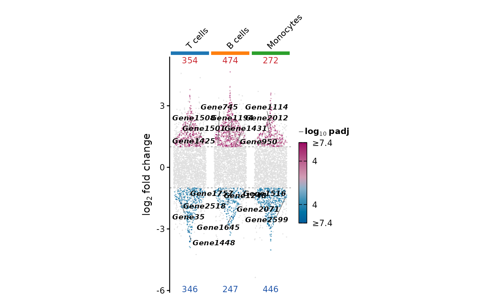
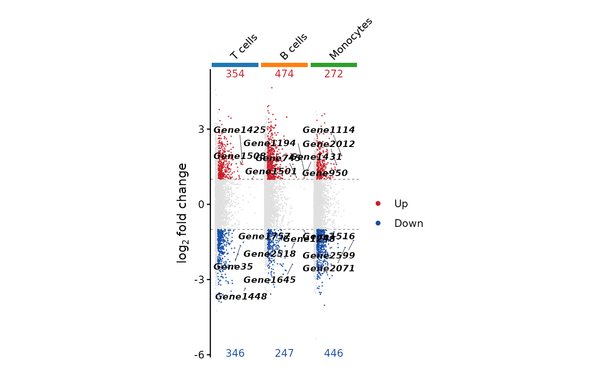

Summarizes genome-wide DE results of many comparisons in one
figure (e.g. condition B vs A within each cell type): one
column of genes per comparison, at their log2 fold change
(non-significant genes in grey, the cutoffs as dashed lines),
each comparison marked by a coloured strip and its name on
top, the numbers of up- and down-regulated genes above and
below each column, and the top genes labelled. `flip = TRUE`
lists the comparisons as rows. An improved version of the plot made
popular by scRNAtoolVis' jjVolcano(): colour carries
the significance (or how many comparisons share a gene)
rather than repeating the direction, points are spread by
their density so that each column shows the shape of its
distribution, and no value is capped.
Usage
plot_multi_volcano(
de,
method = c("auto", "edgeR", "DESeq2", "limma", "seurat"),
feature.col = NULL,
logfc.col = NULL,
p.col = NULL,
padj.col = NULL,
comparison.col = NULL,
groups = NULL,
padj.cutoff = 0.05,
logfc.cutoff = 1,
show.ns = TRUE,
layout = c("sina", "pvalue", "jitter"),
color.by = c("padj", "direction", "sharing"),
cols = NULL,
comparison.cols = NULL,
comparison.labels = NULL,
groups.cols = NULL,
groups.side = c("opposite", "labels"),
group.bar.width = 3.5,
flip = FALSE,
label = c("top", "selected", "none"),
label.n = 3,
label.features = NULL,
label.rank = c("padj", "logfc", "product"),
show.counts = TRUE,
order = c("input", "n_de", "cluster"),
italic.genes = TRUE,
pt.size = 0.6,
alpha = 0.8,
raster = NULL,
raster.dpi = 1000,
cell.width = 0.6,
cell.height = cell.width,
panel.height = 3.5,
panel.width = panel.height,
legend.position = "right",
bg = "transparent",
seed = 42,
...
)Arguments
- de
DE results of several comparisons: a named list of DE tables (names = comparisons), or one table with a comparison column (`comparison.col`), e.g.
Seurat::FindAllMarkers()output with `comparison.col = "cluster"`. For single-cell data, pseudobulk DE results are recommended: per-cell tests (e.g. Wilcoxon) treat cells as replicates and inflate the numbers of DE genes, more so in large groups- method, feature.col, logfc.col, p.col, padj.col, comparison.col, groups
How the DE tables are read, see
standardize_de. `groups` (a group per comparison) draws the columns of a group together under its label- padj.cutoff, logfc.cutoff
A gene is DE when its adjusted p-value is below `padj.cutoff` (default 0.05) and its absolute log2 fold change above `logfc.cutoff` (default 1)
- show.ns
Whether to draw non-significant genes too, in light grey ("grey88", or `cols["ns"]` with `color.by = "direction"`) under the DE genes, default is TRUE
- layout
How points spread across their column: "sina" (default; the up- and down-regulated genes each as wide as their density at that fold change, so that the shape of each distribution shows, and the non-significant genes spread uniformly, a grey block around 0; suited to single-cell pseudobulk results), "pvalue" (x within the column = -log10 adjusted p-value relative to the most significant gene on its side of 0, from the left, making each column a sideways volcano; suited to bulk results, where non-significant genes far outnumber the others) or "jitter" (uniform, the classic look)
- color.by
What the colour of a point shows: "padj" (default; -log10 adjusted p-value on two ramps, warm for up and cool for down, sharing one set of limits; the colour saturates at the 95th percentile of the DE genes' values, so that a few p-values near 0 do not leave the others pale, while the points themselves are never capped), "direction" (one colour for up and one for down) or "sharing" (in how many of the comparisons the gene is DE: comparison-specific versus shared responses)
- cols
Colours of the points: for "padj", a diverging palette name or colours from low (down) to high (up); for "direction", colours named `up` / `down` (or two colours, up then down); for "sharing", a sequential palette name or colours from low to high. NULL (default) uses "blue-magenta" without its pale centre, `c(up = "firebrick4", down = "midnightblue")` and "plasma_r"
- comparison.cols
Colours of the comparison strips (a bar along each column, or row when flipped): NULL (default; the default group palette, "scanpy-20"), a qualitative palette name, or colours named by comparison (e.g. the cell type colours of an embedding)
- comparison.labels
Display names of the comparisons, named by comparison, written beyond the strips (turned 45 degrees when wider than a column)
- groups.cols
Colours of the bars marking the `groups` of comparisons: NULL (default) for black bars, a qualitative palette name, or colours named by group
- groups.side
Side of the `groups`: "opposite" (default; opposite the comparison names: at the bottom, or on the right when flipped) or "labels" (beyond the comparison names)
- group.bar.width
Thickness of the comparison strips and group bars in points, default is 3.5
- flip
Whether to list the comparisons as rows, with log2 fold change on the x-axis (down-regulated genes on the left, up on the right) and the comparison names on the left, default is FALSE (comparisons as columns, names on top)
- label
Which genes to label: "top" (default; the `label.n` most significant genes per column and direction, plus `label.features`), "selected" (only `label.features`) or "none"
- label.n
Number of genes labelled per column and direction, default is 3
- label.features
Genes always labelled (matched exactly)
- label.rank
How the top genes are ranked: "padj" (default), "logfc" or "product", as in
plot_volcano- show.counts
Whether to write the numbers of up- and down-regulated genes above and below each column, default is TRUE
- order
Order of the comparisons: "input" (default; as given), "n_de" (most DE genes first) or "cluster" (similar log2 fold change profiles together). Within groups when `groups` is given
- italic.genes
Whether labels are gene names, in italics, default is TRUE
- pt.size
Point size, default is 0.6
- alpha
Point opacity, default is 0.8
- raster
Whether to rasterize the points (labels, strips and text stay vector): NULL (default) rasterizes above 5,000 points, or TRUE / FALSE
- raster.dpi
Resolution of rasterized points, default is 1000
- cell.width
Width of one column in inches, default is 0.6
- cell.height
Height of one row in inches when flipped, default is `cell.width`
- panel.height
Height of the panel (the log2 fold change axis) in inches, default is 3.5
- panel.width
Width of the panel (the log2 fold change axis) in inches when flipped, default is `panel.height`
- legend.position
Position of the legend, default is "right"
- bg
Background colour, default is "transparent"
- seed
Random seed for the spread of points and label placement, default is 42
- ...
`band.cols` and `band.labels`, the names of `comparison.cols` and `comparison.labels` before 1.0.0, accepted with a deprecation warning
Details
Comparisons play the part of `group.by` in the single-cell plots
(the units compared, marked by colour) and `groups` that of
`split.by` (higher-level blocks, marked by a bar and a name).
The source data (export_source_data) hold one row
per drawn gene with its comparison, x position, log2 fold change,
adjusted p-value, direction, the number of comparisons it is DE in
(`n_shared`) and whether it is labelled.
Examples
set.seed(1)
make_de <- function(shift) {
d <- data.frame(logFC = rnorm(3000, sd = 1.2) + shift, logCPM = 5,
PValue = runif(3000)^6, row.names = paste0("Gene", 1:3000))
d$FDR <- p.adjust(d$PValue, "BH")
d
}
de <- list("T cells" = make_de(0), "B cells" = make_de(0.3), "Monocytes" = make_de(-0.2))
plot_multi_volcano(de)
#> Detected edgeR results in 'T cells' (logFC, PValue, FDR)
#> Detected edgeR results in 'B cells' (logFC, PValue, FDR)
#> Detected edgeR results in 'Monocytes' (logFC, PValue, FDR)

plot_multi_volcano(de, layout = "pvalue", color.by = "direction")
#> Detected edgeR results in 'T cells' (logFC, PValue, FDR)
#> Detected edgeR results in 'B cells' (logFC, PValue, FDR)
#> Detected edgeR results in 'Monocytes' (logFC, PValue, FDR)
